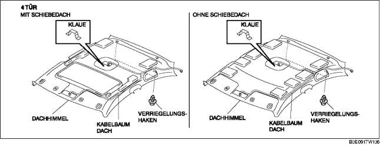
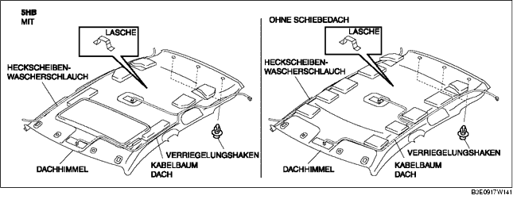

DACHHIMMEL AUSBAUEN/EINBAUEN
B3E091768040W01
1. Das Massekabel der Batterie abklemmen.
2. Die Saumleiste teilweise umschlagen.
3. Folgende Bauteile ausbauen:
-
(1) Schiebedach-Säumleiste (Fahrzeuge mit Schiebedach)
-
(2) Konsole (4SD) (Siehe KONSOLE AUSBAUEN/EINBAUEN.)
-
(3) A-Säulenverkleidung (Siehe A-SÄULENVERKLEIDUNG AUSBAUEN/EINBAUEN.)
-
(4) Obere Sicherheitsgurtverankerung des Vordersitzes (Siehe VORDERSITZ-SICHERHEITSGURT AUSBAUEN/EINBAUEN.)
-
(5) Vordere Schwellerleiste (Siehe VORDERE SCHWELLERLEISTE AUSBAUEN/EINBAUEN.)
-
(6) Hintere Schwellerleiste (Siehe HINTERE SCHWELLERLEISTE AUSBAUEN/EINBAUEN.)
-
(7) B-Säulenverkleidung (Siehe UNTERE B-SÄULENVERKLEIDUNG AUSBAUEN/EINBAUEN.)
-
(8) Obere B-Säulenverkleidung (Siehe OBERE B-SÄULENVERKLEIDUNG AUSBAUEN/EINBAUEN.)
-
(9) Rücksitz (Siehe RÜCKSITZ AUSBAUEN/EINBAUEN.)
-
(10) Radkastenverkleidung (Siehe RADKASTENVERKLEIDUNG AUSBAUEN/EINBAUEN.)
-
(11) Obere seitliche Kofferraumverkleidung (5HB) (Siehe OBERE KOFFERRAUMSEITENVERKLEIDUNG AUSBAUEN/EINBAUEN.)
-
(12) C-Säulenverkleidung (Siehe C-SÄULENVERKLEIDUNG AUSBAUEN/EINBAUEN.)
-
(13) Kartenleseleuchte (Siehe KARTENLESELEUCHTE AUSBAUEN/EINBAUEN.)
-
(14) Inneraumbeleuchtung (Siehe INNENRAUMLEUCHTE AUSBAUEN/EINBAUEN.)
-
(15) Sonnenblende (Siehe SONNENBLENDE AUSBAUEN/EINBAUEN.)
-
(16) Haltegriff (Siehe HALTEGRIFF AUSBAUEN/EINBAUEN.)
4. Den Steckverbinder des Dachkabelbaums abklemmen und den Steckverbinderklipp aus der Karosserie lösen.
5. Den Heckscheiben-Wascherschlauch abziehen. (5HB)
6. Die Befestigungsstifte herausziehen.


7. Die Lasche des Dachhimmels entfernen und den Dachhimmel abnehmen.
8. Den Dachhimmel zur geöffneten Beifahrertür herausziehen. (4SD)
9. Den Dachhimmel durch die geöffnete Heckklappe entfernen. (5HB)
10. Der Einbau erfolgt in umgekehrter Reihenfolge.